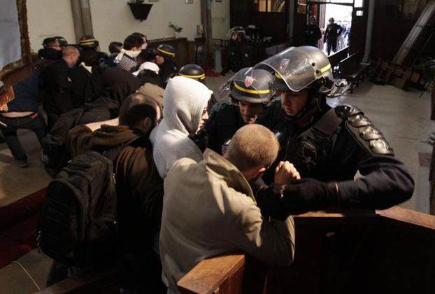

Nous comptabilisons plus de 300 victimes et plus de 1000 blessés en 3 ans à peine dans les attentats terroristes islamistes, l’actualité montre que sans cesse des projets d’attentats sont mis en échec, la menace semble avoir pris une orientation plus inquiétante compte tenu du nombre de cibles potentielles, et nous ne savons toujours pas quelle attitude adopter face à cette situation aggravée, nourrie par nos contradictions, nos faiblesses, nos manques de vision claire et nos divisions.
Ce manque de décision et cette incapacité d’adaptation de nos sociétés et de nos gouvernants actuels démontrent l’appartenance viscérale à ces faux débats sur le respect ou non des droits de l’homme qui frisent carrément le ridicule lorsqu’on s’aperçoit des maladresses commises.
Par exemple, était-il si urgent le 3 août 2016, de faire évacuer une église, qui n’en était plus une, certes, tenue par des extrémistes catholiques, mais dont l’urgence de l’ordre d’évacuation en plein mois d’août donné par un préfet qui n’a pu que rendre compte au ministre de l’intérieur pose question. Cela apparait comme une mesure assez lâche en comparaison avec le recul des autorités face à l’application des mesures d’expulsion, toujours non appliquées, sur les zadistes du futur site de l’aéroport de Nantes.
Il me semble, en effet, que les gesticulations de ces « jusqu'au-boutistes catho» ne mettaient en danger ni la République, ni la sécurité de l’Etat, en tout cas, leurs discours apparaissaient de toute façon moins dangereux que celui des imans salafistes, à qui on donne, d’ailleurs, avant expulsion, toutes les garanties de droit.
Maladresse divine, en quelque sorte, et mesure imbécile, qui offrent un boulevard à une Marine Le Pen, qui n’a même pas besoin de se démener pour apporter des arguments à son discours.
Mais peut-être, est-ce un objectif du pouvoir de faire monter au plus haut le FN, afin que par un réflexe de peur les Français lui confient leur destin ?
Face aux élections qui s’annoncent, ma référence est plutôt celle d’un de Gaulle de la résistance plutôt qu’un Petain du renoncement. Etant entendu, pour ne vexer personne, que je ne saurais assimiler Hollande ni au second ni surtout au premier.
Le 13 décembre de Gaulle déclarait : « L'essentiel, pour jouer un rôle international, c'est d'exister par soi-même, chez soi. Il n'y a pas de réalité internationale qui ne soit d'abord une réalité nationale ».
En cette période d’incertitudes, nos dirigeants actuels et à venir ont le devoir de s’en inspirer pour réagir sur le plan intérieur et agir sur le plan extérieur. Où se situe aujourd’hui la vision internationale de la France ? Quelle politique étrangère menons-nous ? Pourquoi en sommes-nous ou nous en sommes, là et las de tant de renoncement ?
François Fillon et Vladimir Poutine Les prétendants à l’investiture suprême devront y répondre. Le dernier signe donné par François Fillon, lors des primaires est plutôt encourageant face à un candidat de la mouvance molle et du compromis ou ceux à venir du repli sur soi et du protectionnisme. Quant aux gauches, il y quelques chances pour qu’on ne les retrouve pas dans le sprint final.
Dans le théâtre d’ombre de la vie politique à la française, les choix par défaut ayant donné les résultats que nous connaissons, les médias, comme les politiques, devraient se souvenir que le peuple, lorsqu’il est consulté, choisit parfois avec bon sens le candidat qui lui apparait comme étant le plus apte à remplir la fonction. La droite a donné récemment l’exemple d’un choix réfléchi et cela n’augure pas du résultat final.
Le besoin de rétablir l’autorité de l’État, l’impératif de régler les problèmes économiques et de rétablir notre place sur le plan international afin de suivre une voie plus médiane et équilibrée entre les trois grandes puissances, impose de revenir à une Europe des nations afin de sortir de cette Europe technocratique et castratrice. Ces idées gaulliennes, Fillon semble vouloir les incarner.
Tenter de se rapprocher d’un de Gaulle plutôt que d’un Chamberlain ou d’un Daladier des accords de Munich est salutaire. A choisir, je préfère aussi Clemenceau au général Boulanger.
Nous sommes en guerre, mais ni le Premier ministre, ni le Président de la République n’expliquent de manière claire qui est réellement l’ennemi. Le cantonner au seul E.I apparaît bien réducteur.
Cet ennemi, où se situe-t-il ? Où est-il le plus dangereux ? A-t-il des alliés objectifs? Avons-nous la capacité de le détruire? Sommes-nous les seuls à le combattre ? Quelle stratégie développons-nous pour assurer notre sécurité ? Concrètement, quelles sont les mesures prises, à part intensifier quelques bombardements ici ou là en Syrie, en Irak, en Libye ? Certes, sur le terrain daesh recule, mais aussitôt remplacé par des milices métastasées. La paix ne peut revenir qu’en parlant avec tous les acteurs du conflit, Russie et Iran y compris.
Pire encore, en déclarant ne devoir jamais intervenir directement sur le terrain avec des forces terrestres, c’est avouer d’avance notre faiblesse.
Nous manquons de vision stratégique et nous avons mis en place la pire politique étrangère depuis l’avènement de la cinquième république. Après avoir fait fausse route en ne voulant pas voir la réalité en face en intégrant les deux paramètres essentiels du conflit syrien, Bachar et les Russes, on s’est sorti du jeu. Nuls aux échecs, nous sommes perdants au poker.
Nous sommes en guerre, mais nous avons deux territoires de conflits radicalement différents et relativement indépendants l’un de l’autre. Nous sommes en guerre sur le territoire national, une guerre précivile avec la montée des communautarismes. Plutôt que de faire la guerre avec des moyens adaptés, nous perdons un temps précieux à tergiverser, à discuter du financement des mosquées, d’un islam de France, que nous devrions inventer alors qu’il en existe des centaines de variantes.
Cette religion repose avant tout sur l’ignorance volontairement entretenue par des traditions a-culturelles. Nous avons eu le siècle des lumières, la majorité des musulmans est en attente du siècle de la bougie et nos gentils terroristes sont restés au siècle des croisades dont la dernière, faut-il le rappeler, la neuvième, menée par le prince Édouard d'Angleterre (futur Édouard Ier) a eu lieu de 1271-1272.
Ainsi, d’un côté, on mime la danse du ventre devant les pseudos conseils du culte musulman noyautés par les Frères Musulmans, de l’autre on laisse les zones de non-droit tranquilles.
A chaque jour suffit à sa peine, mais virer un prêtre faisant la messe, que le lieu soit consacré ou pas, permet de calmer les nerfs d’un gouvernement à la dérive qui avertit par ailleurs les Français d’un prochain attentat, prenant ainsi les devants de son incommensurable faiblesse.
Il est temps de tourner la page et de montrer d’autres voies possibles. Entre Chamberlain et de Gaulle il faut choisir.
Partager cette page